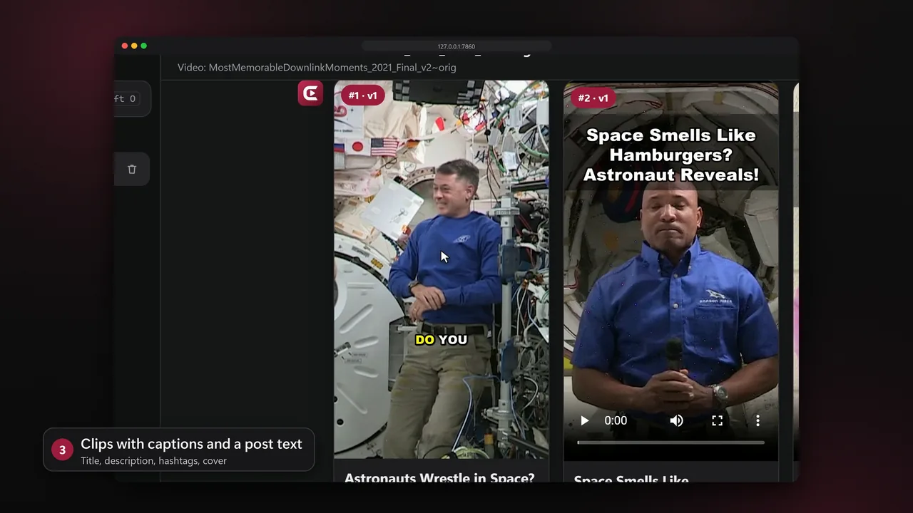

Long videos in. Vertical clips out.
Clippy is a free, open-source AI clipper that runs on your own computer. Paste a YouTube, Twitch or podcast link into its chat and get 9:16 clips for TikTok, YouTube Shorts and Instagram Reels, with captions and a ready post text. Then change anything by asking.
MIT license. Windows, macOS and Linux. No account, no upload, no subscription.

See it work in one minute
Recorded in the real app, in 4K. The clips come from a public-domain NASA video; the long wait is sped up and marked.
How it works
Everything happens in one chat window on your computer.

Paste a link
YouTube, Twitch, Kick, TikTok, Instagram and the other sites yt-dlp supports, or a video file. Say how many clips you want, or start from a ready-made prompt for podcasts, gameplay and streams, promos or quick shorts.
No link at hand? clip the latest stream of Kai Cenat finds it.

It finds the best moments
Clippy transcribes the video in its own language, reads the reactions (laughter, loud moments, the stream chat) and has a local language model rank every candidate moment by its hook.
A live card shows each step and the time left.

You get finished clips
9:16 with the speaker in frame, or the facecam on top and the game below for streams. Dead air is cut, the sound is mastered for phones and the captions follow every word.
Each clip comes with a title, a description, a comment question, hashtags, a cover and a second title to test.

Change it by asking
put an opening text on clip 3 or make it 16:9: every change is a new version you can undo, rendered in seconds.
Post to your own YouTube, Instagram and TikTok, right away or at a set time.
What Clippy does
The work of a clipper, done on your own computer.
- Picks moments by their hook
- Every candidate is scored for its hook, payoff, emotion and quotability, then ranked against the others.
- Keeps the right person in frame
- Shot detection, face tracking and the active speaker drive a virtual camera that never shakes.
- Captions in the video's language
- Word-by-word captions in any language Whisper knows, translated between English and Hungarian on request.
- Built for streams
- Facecam on top and game below; peaks are found by sound, picture and chat, even without speech.
- Daily picks of a game
- Ask for 3 GTA VI clips every day and get the most watched streamer moments with a time to post each.
- Watches your channels
- New videos of a YouTube or Twitch channel become clips without you asking.
- Posts for you
- YouTube, Instagram and TikTok through your own developer apps, now or planned.
- Learns what works
- Views and watch time come back onto each clip and steer the next picks.
- Works on your phone
- Pair a phone on the same Wi-Fi with a QR code and use the same chats.
- Private by default
- Local models, no upload. Account tokens stay on your computer.
Install Clippy
About fifteen minutes, most of it downloading. Every tool it needs is free.
- System
- Windows 10 or 11, macOS or Linux
- Graphics card
- NVIDIA, 12-16 GB VRAM recommended; the CPU works too
- Disk
- About 25 GB for the AI models and the cache
- Tools
- Python 3.12, Ollama, Git, Node.js
Install the free tools in PowerShell or Terminal:
Then close the terminal and open a new one.winget install Python.Python.3.12 winget install Ollama.Ollama winget install Git.Git winget install OpenJS.NodeJS.LTSGet Clippy, or download the ZIP and unpack it:
git clone https://github.com/hajdu-patrik/clippy.git cd clippyRun the installer. It sets up Python, the GPU packages when an NVIDIA card is present, the AI model and the
clippycommand:The first run downloads the language model (about 12 GB). You can run it again any time.powershell -ExecutionPolicy Bypass -File install.ps1Start Clippy in a new terminal. The app opens in your browser at http://127.0.0.1:7860.
clippy start
Install the free tools with Homebrew, then open the Ollama app once:
brew install python@3.12 git node brew install --cask ollamaGet Clippy:
git clone https://github.com/hajdu-patrik/clippy.git cd clippyRun the installer:
Macs encode video on the CPU, and a hosted language model is the faster choice there (see below).sh install.shStart Clippy in a new terminal:
clippy start
Install the free tools (Ubuntu and Debian shown):
sudo apt install python3.12 python3.12-venv git nodejs curl -fsSL https://ollama.com/install.sh | shGet Clippy:
git clone https://github.com/hajdu-patrik/clippy.git cd clippyRun the installer:
sh install.shStart Clippy in a new terminal:
clippy start
- No strong graphics card
- Use a free hosted language model: get a key at Groq or Google AI Studio and paste it into the matching block of the
.envfile. Videos stay on your computer; only transcript text goes to the model. - On your phone
- Run
clippy restart --lanand scan the QR code with a phone on the same Wi-Fi. - Updating
- Run
git pullin the Clippy folder, then the installer again.
Questions
Is Clippy really free?
Yes. It is MIT-licensed and uses free models on your own computer: faster-whisper for speech, Qwen3-14B through Ollama for picking and editing, FFmpeg for video. There is no account, subscription or watermark.
How is it different from online clipping tools?
Clippy runs on your computer, so videos are never uploaded and there are no credits or monthly limits. It is open source, and every change to a clip is asked for in plain words and can be undone.
How fast is it?
On an NVIDIA card with 16 GB of memory a 7-minute video becomes three finished clips in about seven minutes. Changing an existing clip takes seconds.
Which languages does it support?
Every video is transcribed and captioned in its own language, in any language Whisper knows, and its post text follows that language. The app itself is in English.
Can I clip other people's videos?
Post and monetise only your own footage, footage you have permission for, or clips from an official clipping campaign. A platform's terms of service may restrict downloading.
Something does not work
Run clippy status and clippy logs, then open an issue on GitHub with what you see.
Make your first clips today
Install it once, paste a link, and your first vertical clips are ready to post.